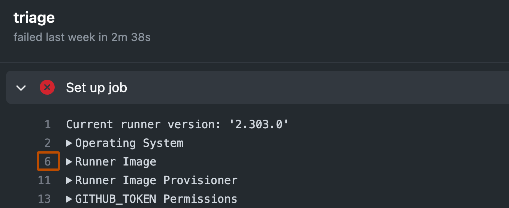
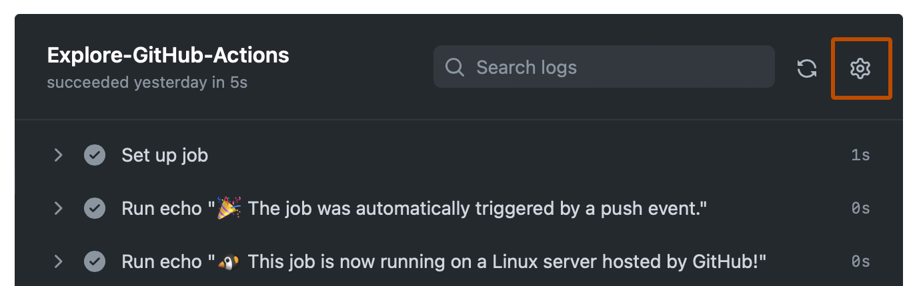
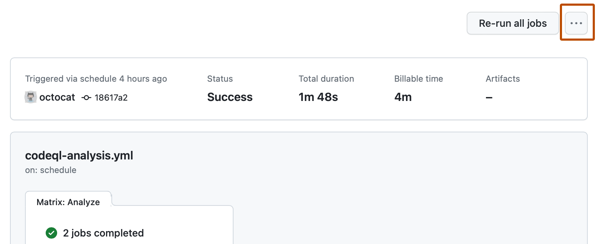

You can view, search, and download the logs for each job in a workflow run.
You can see whether a workflow run is in progress or complete from the workflow run page. You must be logged in to a GitHub account to view workflow run information, including for public repositories. For more information, see Access permissions on GitHub.
If the run is complete, you can see whether the result was a success, failure, canceled, or neutral. If the run failed, you can view and search the build logs to diagnose the failure and re-run the workflow. You can also view billable job execution minutes, or download logs and build artifacts.
GitHub Actions use the Checks API to output statuses, results, and logs for a workflow. GitHub creates a new check suite for each workflow run. The check suite contains a check run for each job in the workflow, and each job includes steps. GitHub Actions are run as a step in a workflow. For more information about the Checks API, see REST API endpoints for checks.
Note
Ensure that you only commit valid workflow files to your repository. If .github/workflows contains an invalid workflow file, GitHub Actions generates a failed workflow run for every new commit.
Viewing logs to diagnose failures
If your workflow run fails, you can see which step caused the failure and review the failed step's build logs to troubleshoot. You can see the time it took for each step to run. You can also copy a permalink to a specific line in the log file to share with your team. Read access to the repository is required to perform these steps.
In addition to the steps configured in the workflow file, GitHub adds two additional steps to each job to set up and complete the job's execution. These steps are logged in the workflow run with the names "Set up job" and "Complete job".
For jobs run on GitHub-hosted runners, "Set up job" records details of the runner image, and includes a link to the list of preinstalled tools that were present on the runner machine.
On GitHub, navigate to the main page of the repository.
Under your repository name, click Actions.
In the left sidebar, click the workflow you want to see.
From the list of workflow runs, click the name of the run to see the workflow run summary.
Under Jobs or in the visualization graph, click the job you want to see.
Any failed steps are automatically expanded to display the results.
Optionally, to get a link to a specific line in the logs, click on the step's line number. You can then copy the link from the address bar of your web browser.

Searching logs
You can search the build logs for a particular step. When you search logs, only expanded steps are included in the results. Read access to the repository is required to perform these steps.
On GitHub, navigate to the main page of the repository.
Under your repository name, click Actions.
In the left sidebar, click the workflow you want to see.
From the list of workflow runs, click the name of the run to see the workflow run summary.
Under Jobs or in the visualization graph, click the job you want to see.
In the upper-right corner of the log output, in the Search logs search box, type a search query.
Downloading logs
You can download the log files from your workflow run. You can also download a workflow's artifacts. For more information, see Store and share data with workflow artifacts. Read access to the repository is required to perform these steps.
On GitHub, navigate to the main page of the repository.
Under your repository name, click Actions.
In the left sidebar, click the workflow you want to see.
From the list of workflow runs, click the name of the run to see the workflow run summary.
Under Jobs or in the visualization graph, click the job you want to see.
In the upper right corner of the log, select the dropdown menu, then click Download log archive.

Note
When you download the log archive for a workflow that was partially re-run, the archive only includes the jobs that were re-run. To get a complete set of logs for jobs that were run from a workflow, you must download the log archives for the previous run attempts that ran the other jobs.
Deleting logs
You can delete the log files from your workflow runs through the GitHub web interface or programmatically. Write access to the repository is required to perform these steps.
Deleting logs via the GitHub web interface
On GitHub, navigate to the main page of the repository.
Under your repository name, click Actions.
In the left sidebar, click the workflow you want to see.
From the list of workflow runs, click the name of the run to see the workflow run summary.
In the upper-right corner, select the dropdown menu, then click Delete all logs.

Review the confirmation prompt.
After deleting logs, the Delete all logs button is removed to indicate that no log files remain in the workflow run.
Deleting logs programmatically
You can use the following script to automatically delete all logs for a workflow. This can be a useful way to clean up logs for multiple workflow runs.
To run the example script below:
Copy the code example and save it to a file called delete-logs.sh.
Grant it the execute permission with chmod +x delete-logs.sh.
Run the following command, where REPOSITORY_NAME is the name of your repository and WORKFLOW_NAME is the file name of your workflow.
./delete-logs.sh REPOSITORY_NAME WORKFLOW_NAME
For example, to delete all of the logs in the monalisa/octocat repository for the .github/workflows/ci.yaml workflow, you would run ./delete-logs.sh monalisa/octocat ci.yaml.
Example script
#!/usr/bin/env bash
# Delete all logs for a given workflow
# Usage: delete-logs.sh <repository> <workflow-name>
set -oe pipefail
REPOSITORY=$1
WORKFLOW_NAME=$2
# Validate arguments
if [[ -z "$REPOSITORY" ]]; then
echo "Repository is required"
exit 1
fi
if [[ -z "$WORKFLOW_NAME" ]]; then
echo "Workflow name is required"
exit 1
fi
echo "Getting all completed runs for workflow $WORKFLOW_NAME in $REPOSITORY"
RUNS=$(
gh api \
-H "Accept: application/vnd.github+json" \
-H "X-GitHub-Api-Version: 2022-11-28" \
"/repos/$REPOSITORY/actions/workflows/$WORKFLOW_NAME/runs" \
--paginate \
--jq '.workflow_runs[] | select(.conclusion != "") | .id'
)
echo "Found $(echo "$RUNS" | wc -l) completed runs for workflow $WORKFLOW_NAME"
# Delete logs for each run
for RUN in $RUNS; do
echo "Deleting logs for run $RUN"
gh api \
--silent \
--method DELETE \
-H "Accept: application/vnd.github+json" \
-H "X-GitHub-Api-Version: 2022-11-28" \
"/repos/$REPOSITORY/actions/runs/$RUN/logs" || echo "Failed to delete logs for run $RUN"
# Sleep for 100ms to avoid rate limiting
sleep 0.1
done
To view the log for a specific job, use the run view subcommand. Replace run-id with the ID of run that you want to view logs for. GitHub CLI returns an interactive menu for you to choose a job from the run. If you don't specify run-id, GitHub CLI returns an interactive menu for you to choose a recent run, and then returns another interactive menu for you to choose a job from the run.
gh run view RUN_ID --log
You can also use the --job flag to specify a job ID. Replace job-id with the ID of the job that you want to view logs for.
gh run view --job JOB_ID --log
You can use grep to search the log. For example, this command will return all log entries that contain the word error.
gh run view --job JOB_ID --log | grep error
To filter the logs for any failed steps, use --log-failed instead of --log.